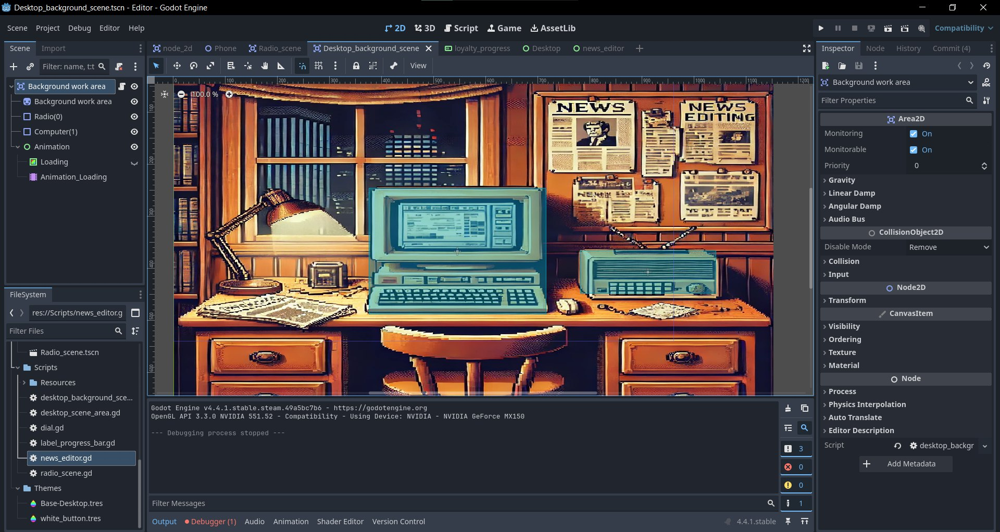
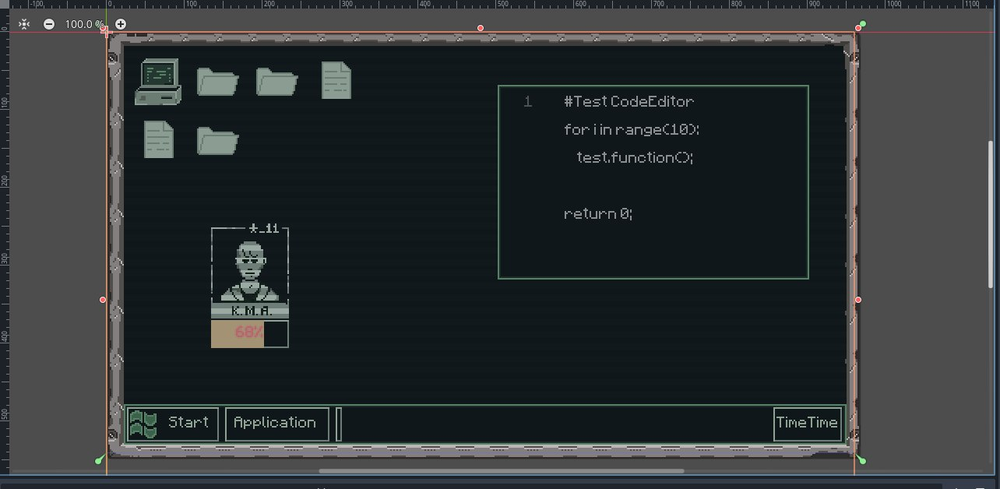

Stalopxasine
Editor – это сюжетный симулятор от первого лица, выполненный в стиле социалистического реализма с элементами дизель-панка. Игрок берет на себя роль редактора новостей на государственном радио-канале, где каждый день приходится принимать решения, влияющие на жизнь общества. Главный герой – это маленькая шестеренка в огромной машине государства, и от его выбора зависит, какую информацию получат граждане: пропагандистские материалы, угодные правительству, или правду, которая может изменить ход событий.

